Лонский Дмитрий
Начинающий Front-end разработчик
О себе
В 2018 году окончил Белорусскую Государственную Академию Искусств по специальности Звукорежиссер кино и телевидения. Во время учебы попал на сьемочную площадку и начал работать звукооператором и ассистентом звукооператора. В связи с пандемией, а также политическим и экономическим кризисом, работы стало значитально меньше. В связи с этим я решил полностью изменить свою жизнь и поменять профессию, поэтому записался на курсы Front-end разработчика.
Фильмография
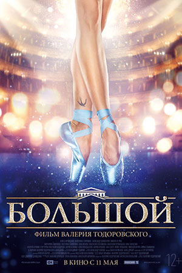
Большой
Режиссер: Валерий Тодоровский
Кинопоиск: 6.8
Кино-Театр: 7.799
Юная и необычайно талантливая танцовщица Юля Ольшанская из маленького шахтерского городка вытягивает «счастливый билет»: её замечает бывший артист балета Потоцкий (Александр Домогаров) и прочит будущее великой балерины, достойной главной сцены страны. Однако для того, чтобы стать бриллиантом, любому, даже самому выдающемуся алмазу, требуется огранка, и путь на легендарные подмостки Большого театра для Юли лежит через стены балетной школы.
Юная и необычайно талантливая танцовщица Юля Ольшанская из маленького шахтерского городка вытягивает «счастливый билет»: её замечает бывший артист балета Потоцкий (Александр Домогаров) и прочит будущее великой балерины, достойной главной сцены страны. Однако для того, чтобы стать бриллиантом, любому, даже самому выдающемуся алмазу, требуется огранка, и путь на легендарные подмостки Большого театра для Юли лежит через стены балетной школы.
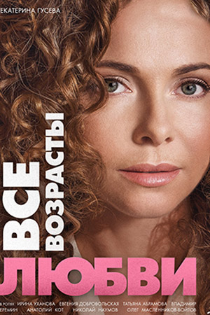
Все возрасты любви
Режиссер: Александр Муратов
Кинопоиск: -
Кино-Театр: 5
У каждого из трех главных героев фильма за плечами не очень удачная личная жизнь. И вот словно Судьба предоставила им другую попытку.
Разведенный топ-менеджер Шубин решил жениться на молоденькой няне своей 14-летней дочери Вики, не подозревая, что у няни есть свой бойфренд и некоторые планы относительно имущества топ-менеджера.
Бывшая жена Шубина, Маковцова Катя, в свои 37 лет фактически поставила на себе крест, как на женщине, что не помешало ей, как следует влюбиться в 25-летнего Игоря и выдержать по этому поводу бесконечный негатив от близких и не только близких людей.
У каждого из трех главных героев фильма за плечами не очень удачная личная жизнь. И вот словно Судьба предоставила им другую попытку.
Разведенный топ-менеджер Шубин решил жениться на молоденькой няне своей 14-летней дочери Вики, не подозревая, что у няни есть свой бойфренд и некоторые планы относительно имущества топ-менеджера.
Бывшая жена Шубина, Маковцова Катя, в свои 37 лет фактически поставила на себе крест, как на женщине, что не помешало ей, как следует влюбиться в 25-летнего Игоря и выдержать по этому поводу бесконечный негатив от близких и не только близких людей.
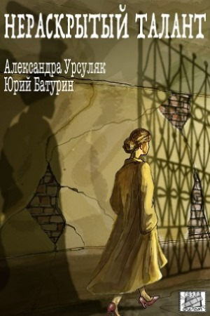
Нераскрытый талант - I
Режиссер: Владимир Янковский
Кинопоиск: 6.2
Кино-Театр: 7.591
Удивительное совпадение: в волжском городке одновременно с появлением нового главного режиссёра театра Вишневецкого начинает орудовать маньяк. Следователь Бутко, ведущий дело, постоянно сталкивается с примой театра Мариной Майской – прекрасной, молодой, талантливой, но одинокой женщиной. Удивительно, но все подозреваемые связаны с Мариной, начиная с Вишневецкого, который когда-то был её мужем. Майская пытается вмешиваться в следствие, и у неё обнаруживается незаурядный детективный талант.
Удивительное совпадение: в волжском городке одновременно с появлением нового главного режиссёра театра Вишневецкого начинает орудовать маньяк. Следователь Бутко, ведущий дело, постоянно сталкивается с примой театра Мариной Майской – прекрасной, молодой, талантливой, но одинокой женщиной. Удивительно, но все подозреваемые связаны с Мариной, начиная с Вишневецкого, который когда-то был её мужем. Майская пытается вмешиваться в следствие, и у неё обнаруживается незаурядный детективный талант.
Выйти замуж любой ценой
Режиссер: Александр Сухарев
Кинопоиск: 5.9
Кино-Театр: 5.556
По одноименному роману Татьяны Поляковой.
Ирине скоро тридцать, и её самое страстное желание – удачно выйти замуж. И вот после полутора лет вялотекущего романа её шеф Юрий наконец-то делает предложение руки и сердца. А утром следующего дня Ирина просыпается в чужой квартире в постели с симпатичным молодым человеком, имени которого она не помнит. А на кухне – труп женщины…
По одноименному роману Татьяны Поляковой.
Ирине скоро тридцать, и её самое страстное желание – удачно выйти замуж. И вот после полутора лет вялотекущего романа её шеф Юрий наконец-то делает предложение руки и сердца. А утром следующего дня Ирина просыпается в чужой квартире в постели с симпатичным молодым человеком, имени которого она не помнит. А на кухне – труп женщины…
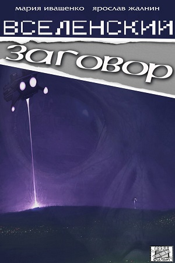
Вселенский заговор
Режиссер: Владимир Янковский
Кинопоиск: 5.6
Кино-Театр: 4.75
"Конец света близок, грядет нашествие инопланетян, и изменить уже ничего нельзя". Нет, это не реклама фантастического блокбастера, а фрагмент научно-популярного фильма, на показ которого Гриша пригласил Марусю в планетарий. Конца света не случилось, но в коридоре нашли труп уфолога Юрия Федоровича. Маруся, обожающая детективные расследования, на пару с Гришей приходит к выводу: ученого убили, и вовсе не пришельцы...
"Конец света близок, грядет нашествие инопланетян, и изменить уже ничего нельзя". Нет, это не реклама фантастического блокбастера, а фрагмент научно-популярного фильма, на показ которого Гриша пригласил Марусю в планетарий. Конца света не случилось, но в коридоре нашли труп уфолога Юрия Федоровича. Маруся, обожающая детективные расследования, на пару с Гришей приходит к выводу: ученого убили, и вовсе не пришельцы...
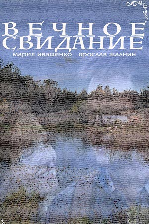
Вечное свидание
Режиссер: Владимир Янковский
Кинопоиск: 5.5
Кино-Театр: 6.207
Отпуск в деревне для Маруси и Гриши обернулся очередным расследованием — убит местный скандалист Валерик. Гриша и Маруся начинают собственное расследование — тайком пробираются в дом убитого, изучают улики, но не торопятся с выводами. Все указывает на таинственную женщину, с которой у Валерика было свидание в тот роковой вечер. Поиски этой дамы заводят Марусю и Гришу очень далеко и чуть не оборачиваются для них катастрофой…
Отпуск в деревне для Маруси и Гриши обернулся очередным расследованием — убит местный скандалист Валерик. Гриша и Маруся начинают собственное расследование — тайком пробираются в дом убитого, изучают улики, но не торопятся с выводами. Все указывает на таинственную женщину, с которой у Валерика было свидание в тот роковой вечер. Поиски этой дамы заводят Марусю и Гришу очень далеко и чуть не оборачиваются для них катастрофой…
Три дня на любовь
Режиссер: Илья Хотиненко
Кинопоиск: 6.6
Кино-Театр: 8.462
У 20-летней Марии Петровой тяжелый недуг сердца, в любой момент способный лишить ее жизни. Родители все время опекают девушку. Им удается договориться об операции у известного кардиохирурга, талантливого Аркадия Маркова. Шансов выжить после вмешательства мало, но этот доктор – их последняя надежда.
За несколько дней до операции Маша вырывается из-под отеческой опеки и едет отдохнуть в приморский город к давнему другу. В самолете она знакомится с Аркадием, который тоже решил провести три дня на побережье...
У 20-летней Марии Петровой тяжелый недуг сердца, в любой момент способный лишить ее жизни. Родители все время опекают девушку. Им удается договориться об операции у известного кардиохирурга, талантливого Аркадия Маркова. Шансов выжить после вмешательства мало, но этот доктор – их последняя надежда.
За несколько дней до операции Маша вырывается из-под отеческой опеки и едет отдохнуть в приморский город к давнему другу. В самолете она знакомится с Аркадием, который тоже решил провести три дня на побережье...
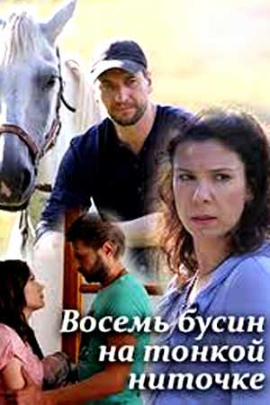
Восем бусин на тонкой ниточке
Режиссер: Марат Ким
Кинопоиск: 5.6
Кино-Театр: 7.561
Маша Успенская даже не догадывалась, какая многочисленная у неё родня, пока её не отыскала тётушка Марфа Степановна и не пригласила на свой юбилей. Отложив все дела, Маша едет к тётушке в деревню, предвкушая знакомство с двоюродными братьями и сёстрами. Однако выясняется истинная причина, по которой Марфа собрала всех на своё 70-летие. Десять лет назад произошло убийство, и убийца – кто-то из собравшихся.
Маша Успенская даже не догадывалась, какая многочисленная у неё родня, пока её не отыскала тётушка Марфа Степановна и не пригласила на свой юбилей. Отложив все дела, Маша едет к тётушке в деревню, предвкушая знакомство с двоюродными братьями и сёстрами. Однако выясняется истинная причина, по которой Марфа собрала всех на своё 70-летие. Десять лет назад произошло убийство, и убийца – кто-то из собравшихся.
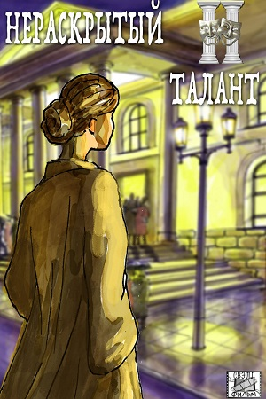
Нераскрытый талант - II
Режиссер: Марат ким
Кинопоиск: -
Кино-Театр: 7.583
К неудовольствию Бутко, Марина Майская вновь вовлечена в расследование – Денис, её сосед по даче, убит в свой день рождения. Через несколько дней погибает и его брат. Подозреваемые каждый раз разные, мотивы неясны, но стоит Марине и Бутко объединить свои усилия, как всё тайное становится явным. Кроме одного: кто-то в театре по-прежнему охотится на Марину. И здесь следователю приходится действовать самостоятельно. Благо, Майская занята на съёмках фильма, а там ей, вроде как, ничего не угрожает. Но в разгар съёмок прямо в кадре убивают актрису, и все улики указывают именно на Марину.
К неудовольствию Бутко, Марина Майская вновь вовлечена в расследование – Денис, её сосед по даче, убит в свой день рождения. Через несколько дней погибает и его брат. Подозреваемые каждый раз разные, мотивы неясны, но стоит Марине и Бутко объединить свои усилия, как всё тайное становится явным. Кроме одного: кто-то в театре по-прежнему охотится на Марину. И здесь следователю приходится действовать самостоятельно. Благо, Майская занята на съёмках фильма, а там ей, вроде как, ничего не угрожает. Но в разгар съёмок прямо в кадре убивают актрису, и все улики указывают именно на Марину.
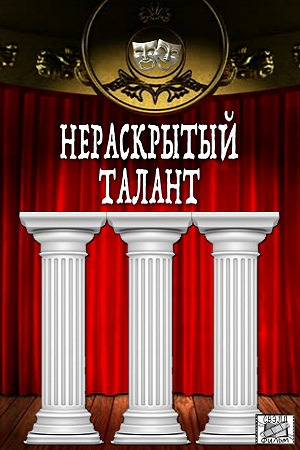
Нераскрытый талант - III
Режиссер: Марат Ким
Кинопоиск: -
Кино-Театр: 7.5
Распутывая очередное дело, Бутко приходит к выводу, что в управлении появился крот. Кто-то знает обо всех его планах и сообщает о них преступникам. Пытаясь вычислить предателя, майор днюет и ночует на работе. А тем временем у Марины появился назойливый поклонник – и не кто-нибудь, а мэр города. Об ухаживаниях мэра доброжелатели доносят Бутко довольно скоро, и разговор с Мариной заканчивается прилюдной ссорой. А на следующий день мэра обнаруживают застреленным в его загородном доме.
Распутывая очередное дело, Бутко приходит к выводу, что в управлении появился крот. Кто-то знает обо всех его планах и сообщает о них преступникам. Пытаясь вычислить предателя, майор днюет и ночует на работе. А тем временем у Марины появился назойливый поклонник – и не кто-нибудь, а мэр города. Об ухаживаниях мэра доброжелатели доносят Бутко довольно скоро, и разговор с Мариной заканчивается прилюдной ссорой. А на следующий день мэра обнаруживают застреленным в его загородном доме.

Чернобыль
Режиссер: Алексей Мурадов
Кинопоиск: -
Кино-Театр: -
Действие сериала разворачивается с апреля по декабрь 1986 года. Украинскому отделу КГБ СССР становится известно об интересе, проявляемом иностранными спецслужбами к Чернобыльской атомной электростанции. Для установления местонахождения на территории Припяти опытного сотрудника ЦРУ Альберта Ленца (Дмитрий Ульянов), которого подозревают в шпионаже, в город прибывает подполковник военной контрразведки Андрей Николаев (Игорь Петренко)...
Действие сериала разворачивается с апреля по декабрь 1986 года. Украинскому отделу КГБ СССР становится известно об интересе, проявляемом иностранными спецслужбами к Чернобыльской атомной электростанции. Для установления местонахождения на территории Припяти опытного сотрудника ЦРУ Альберта Ленца (Дмитрий Ульянов), которого подозревают в шпионаже, в город прибывает подполковник военной контрразведки Андрей Николаев (Игорь Петренко)...

Авантюры Прантиша Вырвича
Режиссер: Александр Анисимов
Кинопоиск: -
Кино-Театр: -
Действие происходит на белорусских землях в XVIII веке, когда властвует шляхта. Юный шляхтич отправляется в путешествие по стране.
В пути Прантиш случайно становится обладателем необычного «имущества» — доктора, алхимика и ученого Бутрамея Ледника, вынужденного пойти в услужение из-за долгов. Встреча становится для героев судьбоносной — гордый и отчаянный шляхтич Вырвич, харизматичный доктор Ледник и его возлюбленная Саломея Ренич попадают в водоворот интриг влиятельных магнатов вокруг трона Речи Посполитой...
Действие происходит на белорусских землях в XVIII веке, когда властвует шляхта. Юный шляхтич отправляется в путешествие по стране.
В пути Прантиш случайно становится обладателем необычного «имущества» — доктора, алхимика и ученого Бутрамея Ледника, вынужденного пойти в услужение из-за долгов. Встреча становится для героев судьбоносной — гордый и отчаянный шляхтич Вырвич, харизматичный доктор Ледник и его возлюбленная Саломея Ренич попадают в водоворот интриг влиятельных магнатов вокруг трона Речи Посполитой...
Пересуд (в производстве)
Режиссер: Александр Франскевич-Лайе
Кинопоиск: -
Кино-Театр: -
Данный фильм находится в производстве
Данный фильм находится в производстве
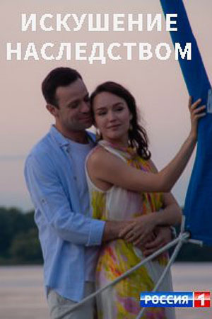
Искушение наследством
Режиссер: Сергей Гиргель
Кинопоиск: -
Кино-Театр: 5.179
Лена – дочь состоятельного бизнесмена. Отец растил свою принцессу как тепличный цветок. Лена никогда ни в чём не нуждалась и нигде не работала. Внезапная смерть отца всё изменила. Весь её благополучный мир оказался иллюзией – дом заложен, нужно платить по кредиту, а счета при этом заморожены. Богатая наследница, совсем недавно даже и не подозревавшая о существовании каких-либо жизненных проблем, вынуждена устроиться на работу простой официанткой.
Но Лена пока и не догадывается, что её обожаемый муж Михаил погряз в долгах и готов на всё, чтобы заполучить её наследство…
Лена – дочь состоятельного бизнесмена. Отец растил свою принцессу как тепличный цветок. Лена никогда ни в чём не нуждалась и нигде не работала. Внезапная смерть отца всё изменила. Весь её благополучный мир оказался иллюзией – дом заложен, нужно платить по кредиту, а счета при этом заморожены. Богатая наследница, совсем недавно даже и не подозревавшая о существовании каких-либо жизненных проблем, вынуждена устроиться на работу простой официанткой.
Но Лена пока и не догадывается, что её обожаемый муж Михаил погряз в долгах и готов на всё, чтобы заполучить её наследство…

Змеи и лестницы
Режиссер: Наталия Микрюкова
Кинопоиск: 6.2
Кино-Театр: 6.667
Из вод холодного озера извлечен автомобиль с находящимся внутри телом. Утопленником оказывается иностранец, приехавший в Россию за месяц до этого. Ни цель его прибытия, ни круг знакомств, ни обстоятельства исчезновения неизвестны. Ясно лишь одно: произошло убийство. И раскрыть его предстоит старшему следователю Александре Зыряновой и капитану Борису Августу.
Из вод холодного озера извлечен автомобиль с находящимся внутри телом. Утопленником оказывается иностранец, приехавший в Россию за месяц до этого. Ни цель его прибытия, ни круг знакомств, ни обстоятельства исчезновения неизвестны. Ясно лишь одно: произошло убийство. И раскрыть его предстоит старшему следователю Александре Зыряновой и капитану Борису Августу.
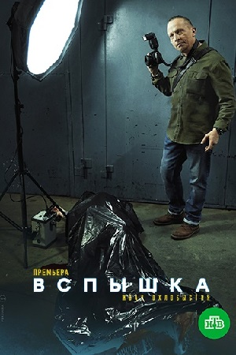
Вспышка (в производстве)
Режиссер: Роман Ярославцев, Станислав Булов
Кинопоиск: -
Кино-Театр: -
Следуя переводом из Главного управления МВД к новому месту назначения, молодой следователь Сева Пашин оказывается подозреваемым в убийстве. В захолустном Энске дело передают в УСБ, папа героя генерал-майор юстиции Евгений Александрович в бешенстве. Он отправил сына подальше из Москвы, чтобы тот стал мужчиной, а тот, как всегда, попал в переплёт.
Следуя переводом из Главного управления МВД к новому месту назначения, молодой следователь Сева Пашин оказывается подозреваемым в убийстве. В захолустном Энске дело передают в УСБ, папа героя генерал-майор юстиции Евгений Александрович в бешенстве. Он отправил сына подальше из Москвы, чтобы тот стал мужчиной, а тот, как всегда, попал в переплёт.
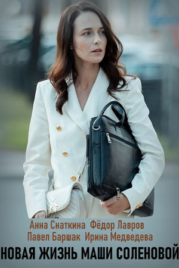
Новая жизнь Маши Соленовой
Режиссер: Илья Максимов
Кинопоиск: -
Кино-Театр: 4.776
42-летняя Мария Соленова — образцовая домохозяйка, заботливая мать двоих детей, любящая жена. Окружающие привыкли обращаться к ней за советом и помощью, ведь Маша отзывчивая и добрая, никогда не откажет. Но у всех случаются черные полосы. Такой день настал и для семейства Соленовых. Дениса, мужа Маши, увольняют из компании, в которой он проработал много лет. Она понимает, что ей пора встать во главе семьи и пойти работать вместо мужа.
42-летняя Мария Соленова — образцовая домохозяйка, заботливая мать двоих детей, любящая жена. Окружающие привыкли обращаться к ней за советом и помощью, ведь Маша отзывчивая и добрая, никогда не откажет. Но у всех случаются черные полосы. Такой день настал и для семейства Соленовых. Дениса, мужа Маши, увольняют из компании, в которой он проработал много лет. Она понимает, что ей пора встать во главе семьи и пойти работать вместо мужа.
Топор - 1943 (в производстве)
Режиссер: Вадим Островский
Кинопоиск: -
Кино-Театр: -
1943 год. Накануне наступления Красной Армии группа капитана Белова, в которую входит Иван Родин, случайно обнаруживает у села Анино замаскированную танковую дивизию. Разведчики понимают, что только они знают об устроенной немцами засаде. Раненный Белов приказывает Ивану дойти до советского командования и предупредить их об опасности.
1943 год. Накануне наступления Красной Армии группа капитана Белова, в которую входит Иван Родин, случайно обнаруживает у села Анино замаскированную танковую дивизию. Разведчики понимают, что только они знают об устроенной немцами засаде. Раненный Белов приказывает Ивану дойти до советского командования и предупредить их об опасности.
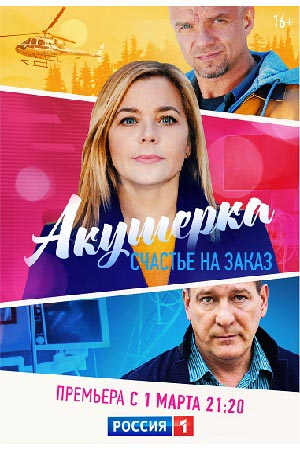
Акушерка. Счастье на заказ
Режиссер: Станислав Либин
Кинопоиск: -
Кино-Театр: 6.034
Пройдя немало испытаний, Татьяна, наконец, получила всё, о чем может мечтать женщина: успешная карьера, взрослая дочь и любимый мужчина рядом. Обжегшись когда-то изменой первого мужа, она верит, что на этот раз будет счастлива. Накануне свадьбы Татьяна вместе с женихом Дмитрием уезжают в отпуск на базу отдыха. Но там они попадают в беду: страшный ливень обрушивается на заповедник и близлежащие села, снося всё на своем пути.
Пройдя немало испытаний, Татьяна, наконец, получила всё, о чем может мечтать женщина: успешная карьера, взрослая дочь и любимый мужчина рядом. Обжегшись когда-то изменой первого мужа, она верит, что на этот раз будет счастлива. Накануне свадьбы Татьяна вместе с женихом Дмитрием уезжают в отпуск на базу отдыха. Но там они попадают в беду: страшный ливень обрушивается на заповедник и близлежащие села, снося всё на своем пути.